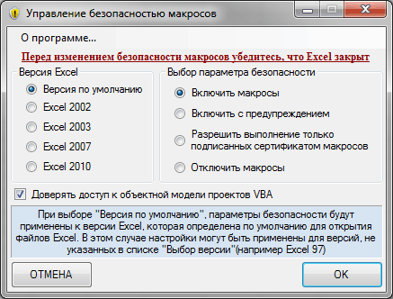

Управление безопасностью макросов
30 Апрель 2011 Дмитрий 2407 просмотров

Эта программка предназначена для изменения параметров безопасности макросов. Это те, которые расположены:
- Excel 2003: Сервис-Безопасность-Уровень макросов
- Excel 2007: Меню-Параметры Excel-Центр управления безопасностью-Параметры центра управления безопасностью-Параметры макросов
- Excel 2010: Файл-Параметры-Центр управления безопасностью-Параметры центра управления безопасностью-Параметры макросов
Для чего это надо. Вы сделали файл с макросами, который планируете кому-то отправить. Но ведь человеку надо объяснить, что для правильной работы файла нужно включить макросы. Кому-то это объяснить получится, а кто-то скажет: "О чем говоришь? Я Excel-то с трудом открываю...". Вот здесь-то и может помочь эта программа. Вы просто высылаете её вместе с файлом. По умолчанию выбор установлен на включение всех макросов и проставление доверия к объектной модели проекта VBA. Так что пользователю надо будет лишь запустить файл с программой и нажать "Ок". Версия Excel при этом определится автоматически.
Так же в программе предусмотрен выбор версий(от Excel 2002 до Excel 2010) и выбор определенного уровня безопасности:
- Включить макросы
Разрешает выполнение всех макросов без уведомлений. Компьютер становится уязвимым для потенциально опасных программ, поэтому использовать данный параметр не рекомендуется.
- Включить с предупреждением
Устанавливается если необходимо отключить макросы, но при их наличии в книге необходимо получать предупреждения системы безопасности. Позволяет разрешать выполнение макросов только в случаях, когда это требуется.
- Разрешить выполнение только подписанных сертификатом макросов
Аналогичен параметру Включить с предупреждением за исключением того, что при наличии цифровой подписи надежного разработчика макрос запускается только в случае, если данный разработчик занесен в список доверенных издателей. Если разработчик не занесен в список доверенных издателей, последует предупреждение. Таким образом, можно выбирать нужный вариант: включить макрос, содержащий цифровую подпись, или занести разработчика в список доверенных издателей. Все макросы, не содержащие цифровой подписи, отключаются без уведомления.
- Отключить макросы
Устанавливается при отсутствии доверия к макросам. В результате отключаются все макросы в книгах, а оповещения системы безопасности не появляются. Макросы без цифровой подписи, но полученные из надежных источников, можно переместить в надежное расположение. Макросы в документах из надежного расположения могут запускаться без проверки системой безопасности центра управления безопасностью.
Для чего нужен выбор версий. Если на компьютере установлено две и более версий Excel, то по умолчанию для открытия файлов Excel применяется лишь одна версия. И если бы в программе не было выбора версий, то изменить параметры безопасности можно было бы лишь для версии по умолчанию, а для другой - стандартным методом, через меню...
Более подробно про назначение каждого параметра безопасности можно прочитать в справке Excel.
Скачать программу:
 MyProgramms_SafetyLevel.zip (249,5 KiB, 4 929 скачиваний)
MyProgramms_SafetyLevel.zip (249,5 KiB, 4 929 скачиваний)
Так же см.:
Как запустить файл с включенными макросами?
Внимание: программа распространяется бесплатно. Распространение данной программы в коммерческих целях запрещено.